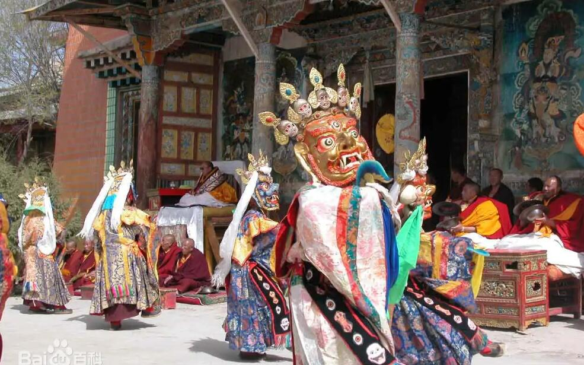

青海藏戏

藏戏是起源于西藏地区的藏族戏曲剧种。青海藏戏是藏剧的一个支脉。藏戏在全国少数民族戏剧中，是历史最久、产生最早的一个。它的起源为原始宗教摫坎〝巫师仪式与当地土风舞相结合而成的哑剧性跳神仪式。它已有600多年的历史，比京剧还早400多年，被称为藏文化的''活化石’’。
藏戏集中了藏族古典文学、音乐、舞蹈、表演、美术等各种艺术手段之大成。在我国戏剧史、文学史上特别在少数民族戏剧史、文学史上占有重要地位。藏戏形成之初，是一种广场剧，乐器只有一鼓一钹和大喇叭，人物上下场用鼓钹伴奏，演唱时多为一人独唱，大家伴唱帮腔。在表演上，藏戏有唱、舞、韵、白、技、表等六功。不论哪能一功，都有注重稳典雅；唱腔因人物定曲，除小丑、反角的唱腔及歌舞曲外，各个剧目中每个人物的唱腔一般不随便借用。唱腔大多采自民歌和说唱音乐，具有联曲体特点和鲜明的地方色彩。音乐旋律古朴、粗犷、浑厚，有许多装饰花腔、顿音、节奏比较悠沉、缓慢。 藏戏的剧目是很丰富的，最著名的有《文成公主》《洛桑王子》《朗莎雯波》 《卓娃桑姆》 《顿月顿珠》《智美更登》 《苏格尼玛》 《白玛文巴》等传统剧目，称为“八大藏戏”。 这些戏，分别取材于历史故事、民间传说、佛教故事和世俗人情；故事性较强，民族色彩浓郁。